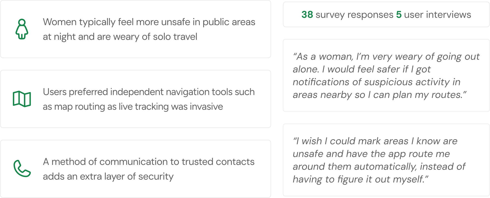
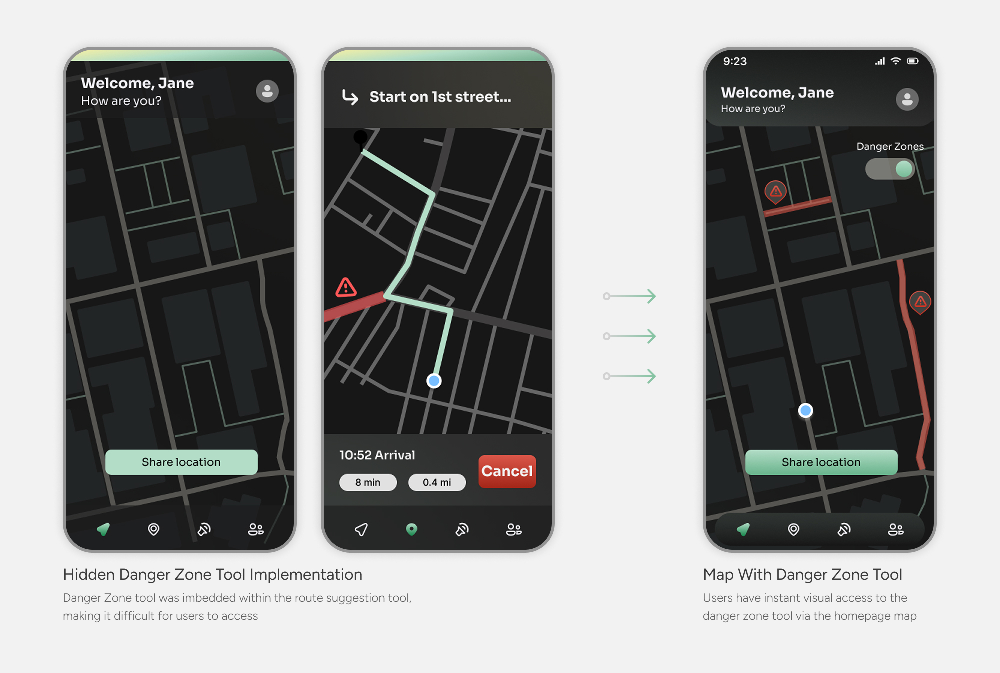
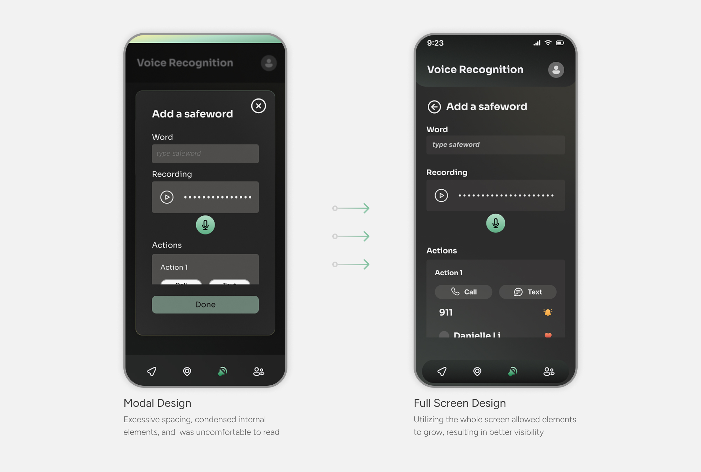
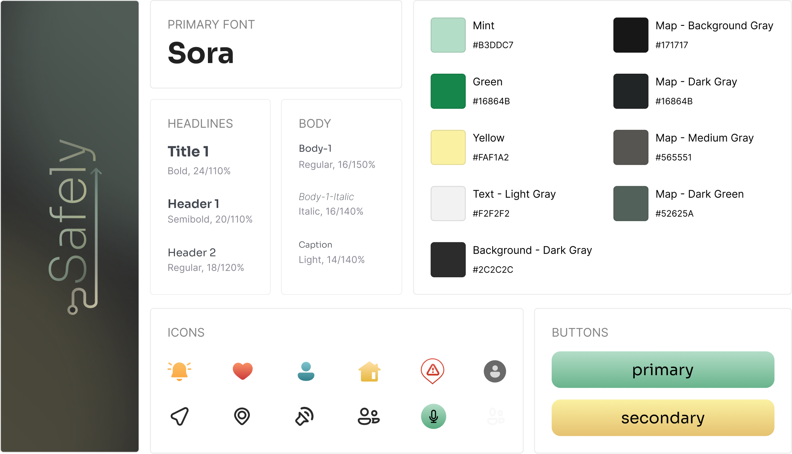
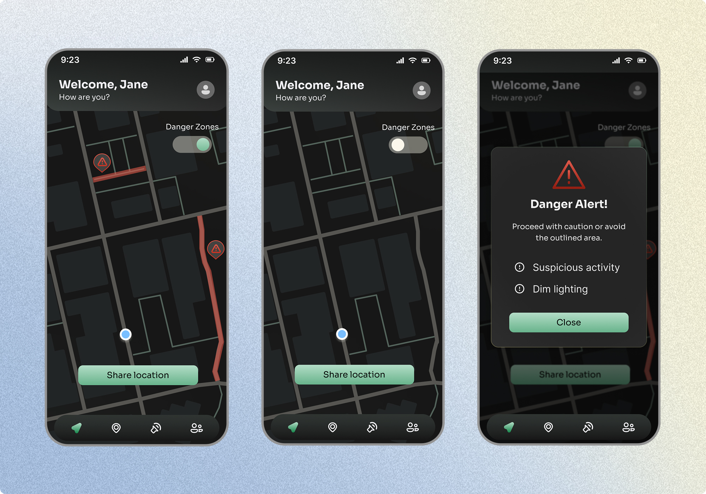
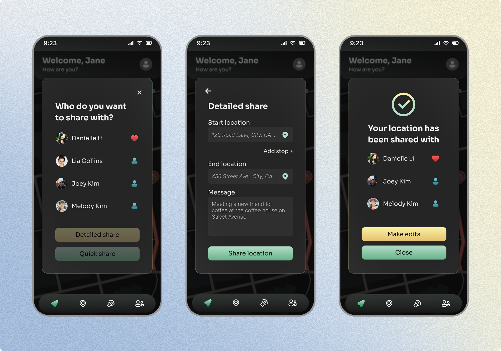
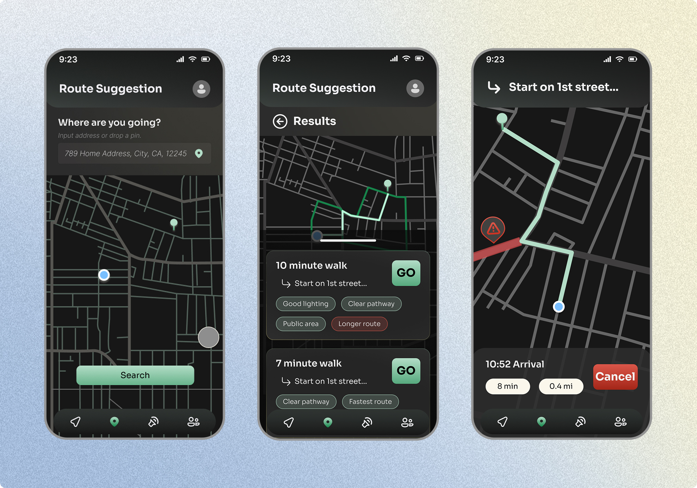
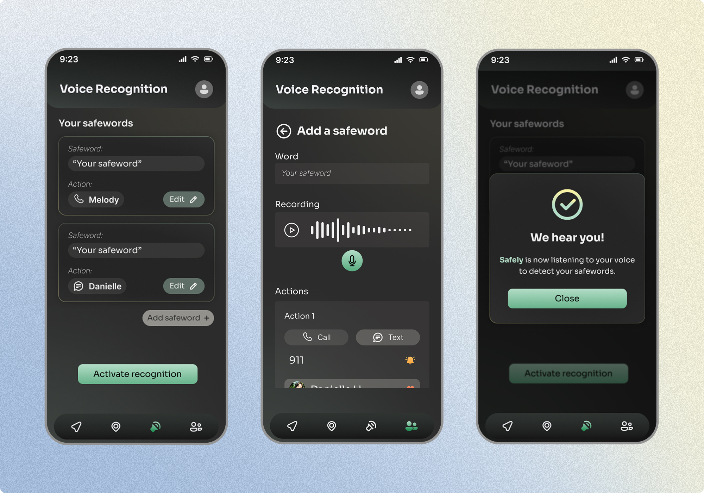
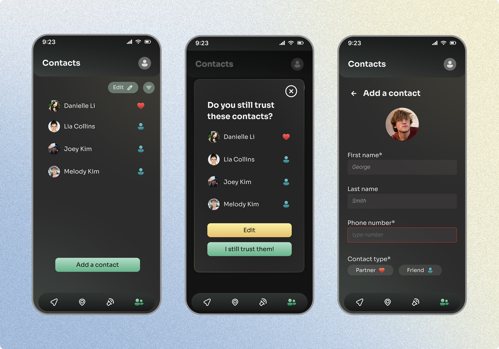

Overview
the problem
Women often feel unsafe in public due to fears of dangerous encounters, crime, or being alone. Personal safety apps are a common tool to address these needs, but many are flawed, offering solutions that don’t align with users’ needs, requiring too many steps that can create confusion during high-stress situations, or have features that may attract unwanted attention.
context
This was a solo UX project I took on during a 5-week period. I was responsible for covering all parts of the entire design process and went through multiple rounds of research, user testing, and rigorous design iterations.
research
Women want to feel safe independently, not just connected
Women reported feeling most unsafe at night and in unfamiliar areas, making them especially cautious about solo travel. While communication tools like live location sharing were valued, many users felt dependent on others to feel safe. This pointed to a need for independent tools, like a map router that factors in street lighting, reported crime, proximity to public spaces, and travel time to generate the safest possible route.

Competitors have the tools, but lack in usability and discretion
I examined three popular safety apps, Im Safe, Life360, and Noonlight, to identify their strengths and where they fell short. While communication and navigation tools were covered across all three, ease of use and discrete UI were largely missing.
Both gaps matter most in high stress situations. Confusing navigation costs users precious time when they need to act fast, and cluttered or bright interfaces can elevate stress levels and draw unwanted attention. This pointed to an opportunity to build a product that treats usability and discretion as core to the safety experience.

define
Discreteness, autonomy, and communication lead the design
After research I determined these three themes: discreetness, autonomy, and communication. Discreteness in visuals can prevent unwanted attention and lower stress. Concerns on privacy with the constant location tracking and voice sensing leads to giving the user autonomy or the choice to use those tools at their discretion. And, communication is a backbone of safety, many individuals feel safe when they are in communication with another person.

ideation
Users needed danger zone access on their own terms
During usability testing, I found that not all users follow suggested routes step by step. Some generated routes purely to preview the safest path, then cancelled to navigate independently. Burying the danger zone tool inside the routing flow meant those users lost access to it the moment they cancelled.
Adding the tool to the homepage map ensured danger zones were always visible, supporting the core design principle of independence. And if the homepage map is too cluttered, users can easily toggle it off.

Densely packed modal screens were uncomfortable to use
While modals worked well for simple confirmation and error screens, the safeword setup screen had too many interactable elements to fit comfortably within one. Users reported the condensed layout was difficult to read and interact with during testing.
Expanding the screen to a full screen design gave each element room to breathe, improving both readability and usability while keeping the modal pattern intact for screens where it made sense.

design system
Curating a calming brand for personal safety
For my design system, I opted for a dark mode UI to create a more discrete interface. This would be ideal in dark or low light settings so that the glow of a bright, white screen wouldn’t attract unwanted attention.
I used green and yellow in subtle gradients and lower saturation shades to employ a smoothing feeling. These colors and application methods are more calming to reduce stress during potentially high-risk situations.

solution
Homepage map for instant access to safer naviation
The homepage map gives users immediate visibility into their surroundings, with a toggleable danger zone overlay that highlights areas flagged for a variety of safety concerns. Tapping a danger zone surfaces a quick alert with details, so users can make informed decisions about their route before they start moving.

Share your location with trusted contacts for extra security
Users can share their location with trusted contacts through two options: a quick share that instantly sends live location tracking, or a detailed share that includes a start point, end point, and a message to give contacts full context of what to expect.

Find your safest pathway based on safety levels and danger zones
The route suggestion tool generates pathway options ranked by safety, factoring in elements like street lighting, proximity to public spaces, and danger zones. Each route is tagged with key attributes so users can weigh their options and choose the path that best fits their needs.

Use voice recognition to contact someone instantly
Users can set up custom safewords tied to specific contacts and actions, like calling 911 or texting a contact, that trigger instantly when detected. Voice recognition is activated and deactivated on the user's terms, keeping the app from passively listening and giving users full control over when they are being monitored.

Add your closest contacts to streamline safety
Users can add trusted contacts to streamline their safety network. Periodic prompts ask users to confirm they still trust their listed contacts, ensuring the people they share their location with are always up to date and intentional.

reflection
01 Empathize with the audience
For this project I conducted 5 usability tests which provided beneficial insight on how I could further improve my product. It gave me the opportunity to talk to my target audience and get more in-depth, detailed responses on how they felt about my designs. With that feedback I made the appropriate changes to fit the needs of my users.
02 Research drives the direction
The Safely project required substantial research to create a successful design. I learned how to compare my work to market competitors and how to conduct and write unbiased surveys. Gathering this data informed my design process and supplied me with information about my target audience, which led to a massive change in trajectory in order to design a app that answers what people actually want.